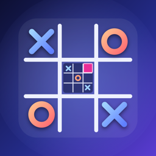

Questions, bug reports or suggestions: fuzzy.vaspu@gmail.com. Please include your iPhone model and iOS version.
Developer: Giuseppe Filippone. Contact: fuzzy.vaspu@gmail.com.
Data the app does not collect. There are no accounts and the app does not ask for your name, email or other personal data. Games, settings and the name you choose for a game with a friend stay on your phone.
Game with a nearby friend. It uses Wi-Fi or Bluetooth directly between the two phones (MultipeerConnectivity). Moves and the chosen name go between the two devices and are not sent to any server.
Leaderboard. If you are signed in to Game Center, your score is sent to Apple's Game Center to build the leaderboard, under Apple's privacy policy. The app does not receive any other Game Center data.
Ads. The app shows ads through Google AdMob. Google may collect device identifiers, approximate location (from the IP address), app usage data, ad interactions and diagnostic data to serve and measure ads. If you accept Apple's tracking request, ads may be personalised with the advertising identifier (IDFA); if you decline, ads still appear but are not personalised. You can change this in Settings → Privacy & Security → Tracking. Google's information: policies.google.com/technologies/ads.
Purchases. The purchase that removes ads is handled by Apple (App Store). We do not receive your payment details.
Children. The app is not directed to children under 13 (or the minimum age in your country).
Changes and contact. If this policy changes, the updated version will be published at this address. For questions write to fuzzy.vaspu@gmail.com.
Domande, segnalazioni di errori o suggerimenti: fuzzy.vaspu@gmail.com. Indica il modello di iPhone e la versione di iOS.
Titolare: Giuseppe Filippone. Contatto: fuzzy.vaspu@gmail.com.
Dati che l'app non raccoglie. L'app non ha account e non ti chiede nome, email o altri dati personali. Le partite, le impostazioni e il nome che scegli per giocare con un amico restano sul tuo telefono.
Partita con un amico vicino. Usa Wi-Fi o Bluetooth direttamente tra i due telefoni (MultipeerConnectivity). Le mosse e il nome scelto passano tra i due dispositivi e non vengono inviati a nessun server.
Classifica. Se hai effettuato l'accesso a Game Center, il tuo punteggio viene inviato a Game Center di Apple per la classifica, secondo l'informativa di Apple. L'app non riceve altri dati da Game Center.
Pubblicità. L'app mostra pubblicità tramite Google AdMob. Google può raccogliere identificativi del dispositivo, posizione approssimativa (dall'indirizzo IP), dati sull'uso dell'app, sulle interazioni con gli annunci e dati diagnostici, per mostrare e misurare gli annunci. Se acconsenti alla richiesta di tracciamento di Apple, gli annunci possono essere personalizzati con l'identificativo pubblicitario (IDFA); se rifiuti, gli annunci restano ma non sono personalizzati. Puoi cambiare la scelta in Impostazioni → Privacy e sicurezza → Tracciamento. Informazioni di Google: policies.google.com/technologies/ads.
Acquisti. L'acquisto che toglie la pubblicità è gestito da Apple (App Store). Non riceviamo i tuoi dati di pagamento.
Bambini. L'app non è rivolta ai minori di 13 anni (o all'età minima del tuo Paese).
Modifiche e contatti. Se l'informativa cambia, la versione aggiornata sarà pubblicata a questo indirizzo. Per domande scrivi a fuzzy.vaspu@gmail.com.